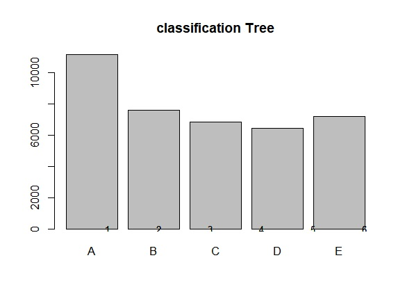
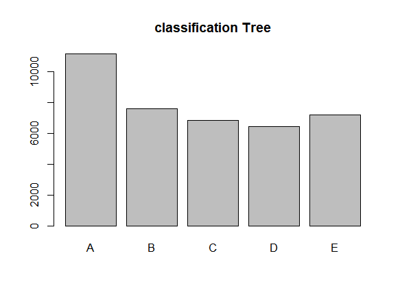
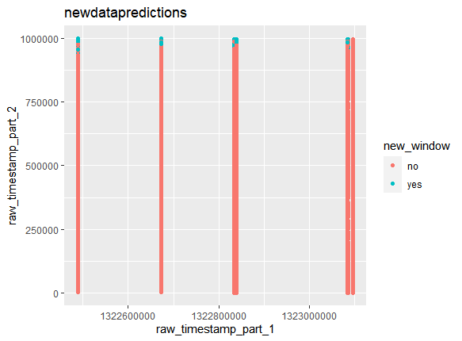
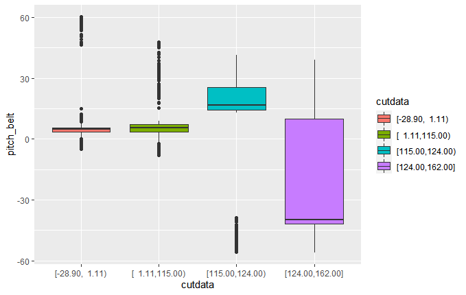
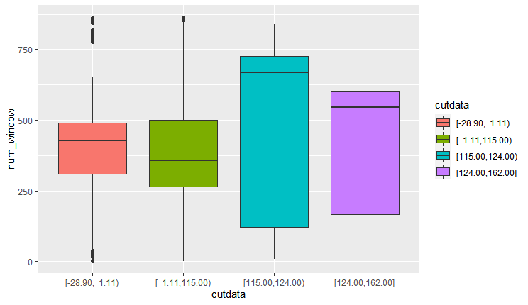
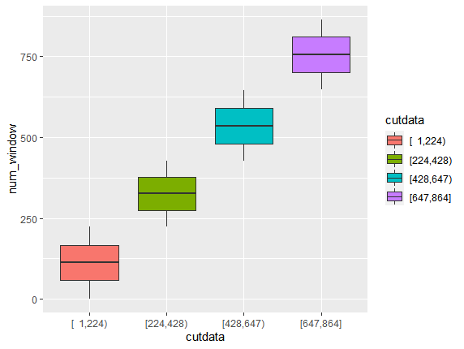

human activity
In thiswe will anlysis the data of human activity the human activity very importantsuch asWeight lifting inAnd because there are a lot of programs to help people in the exercises, but a small number of programs that are concerned with the age of the player, therefore, specific exercises must be specified for each age group, especially ages over 50, and also the correct way to raise and use them must be taught. And in this data we will analyze it and test it.
loaddata
determine traninG and testing
Preprocessing
Dataparation
Createresample
Creat timeslices
Train
Predict
Test
And we have confusion matrix
And will have many plot code of this in rscript





